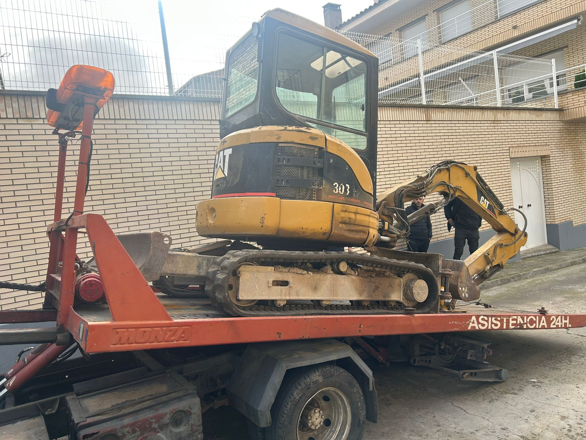
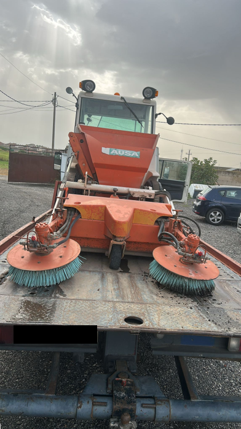
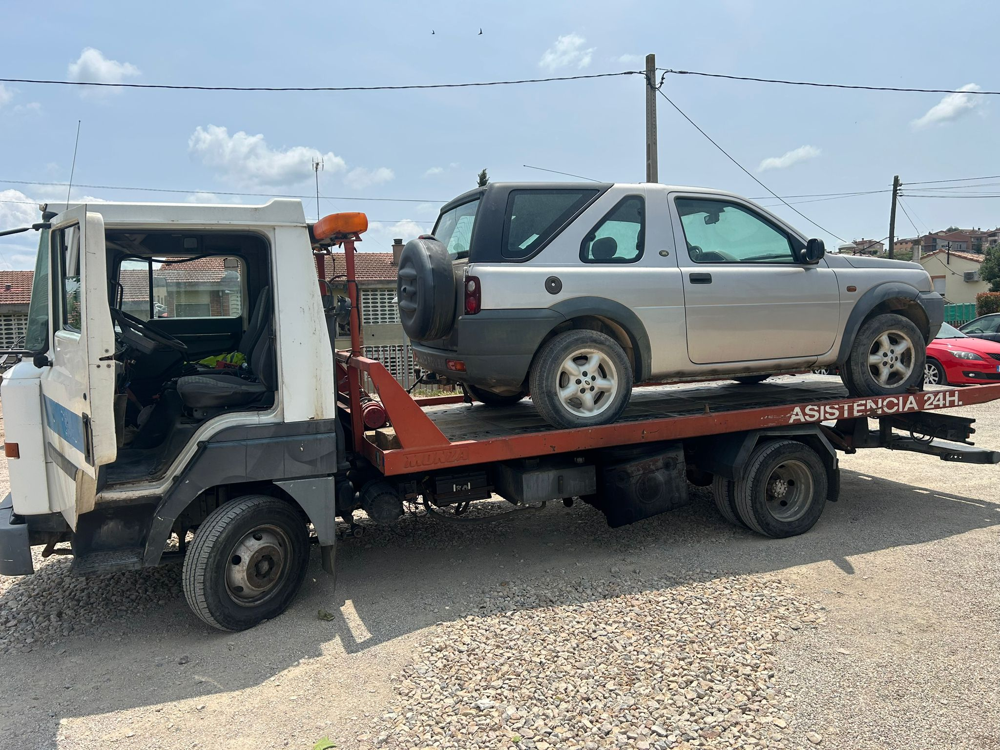
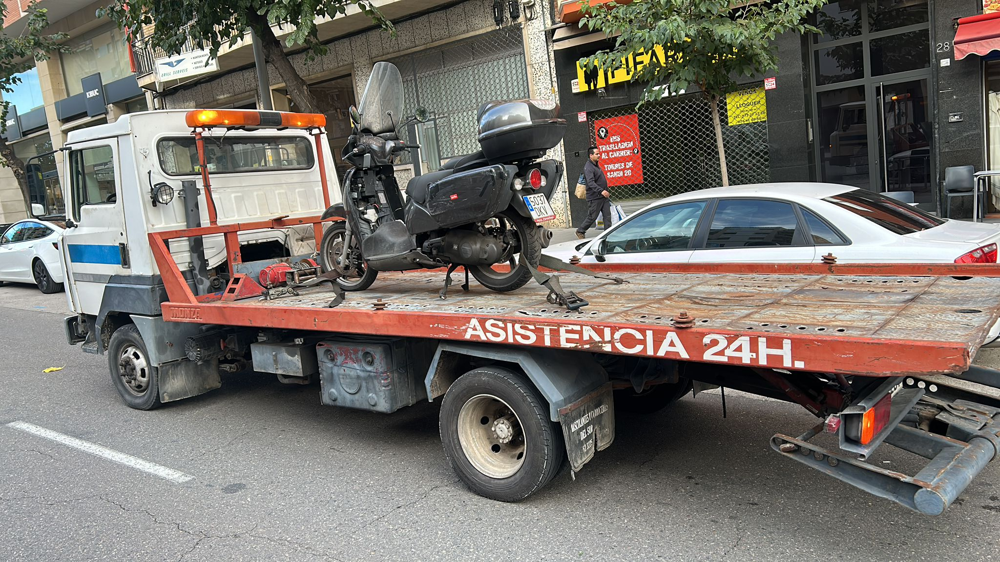
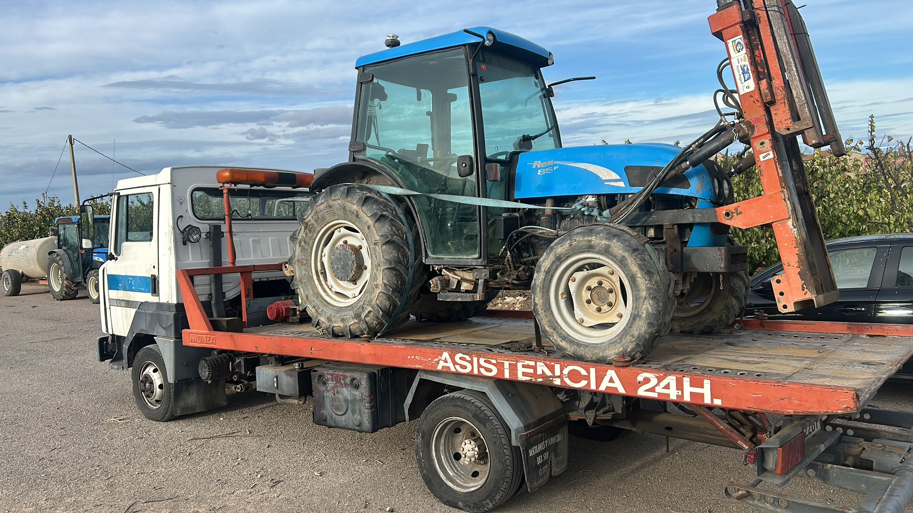

Rápido, seguro y profesional. Nos movemos por toda la comunidad autónoma.
Llamar Ahora
Remolque de turismos, monovolúmenes y todoterrenos. Asistencia rápida y segura. Gestión de baja en la DGT si es necesario. (No realizamos asistencia mecánica).

Traslado de motocicletas, scooters y ciclomotores con equipamiento especializado. Garantizamos la máxima protección para tu vehículo.

Traslado especializado de tractores y maquinaria agrícola de pequeño y mediano tamaño en toda Cataluña. Servicio fiable para tu negocio.
Caravanas
Remolques
Quads
Buggies
Ubicada en Lérida y cobertura por todo Cataluña
No dudes en llamarnos. Estamos disponibles 24/7 para ayudarte.
671 17 51 34